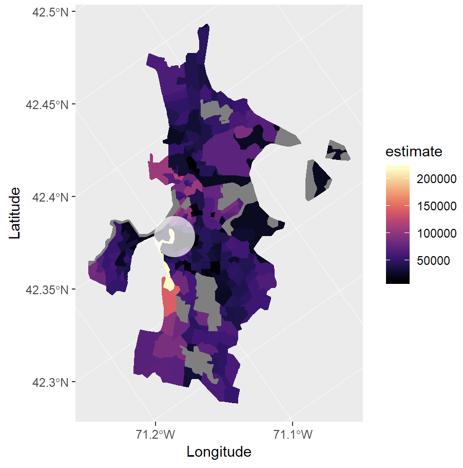
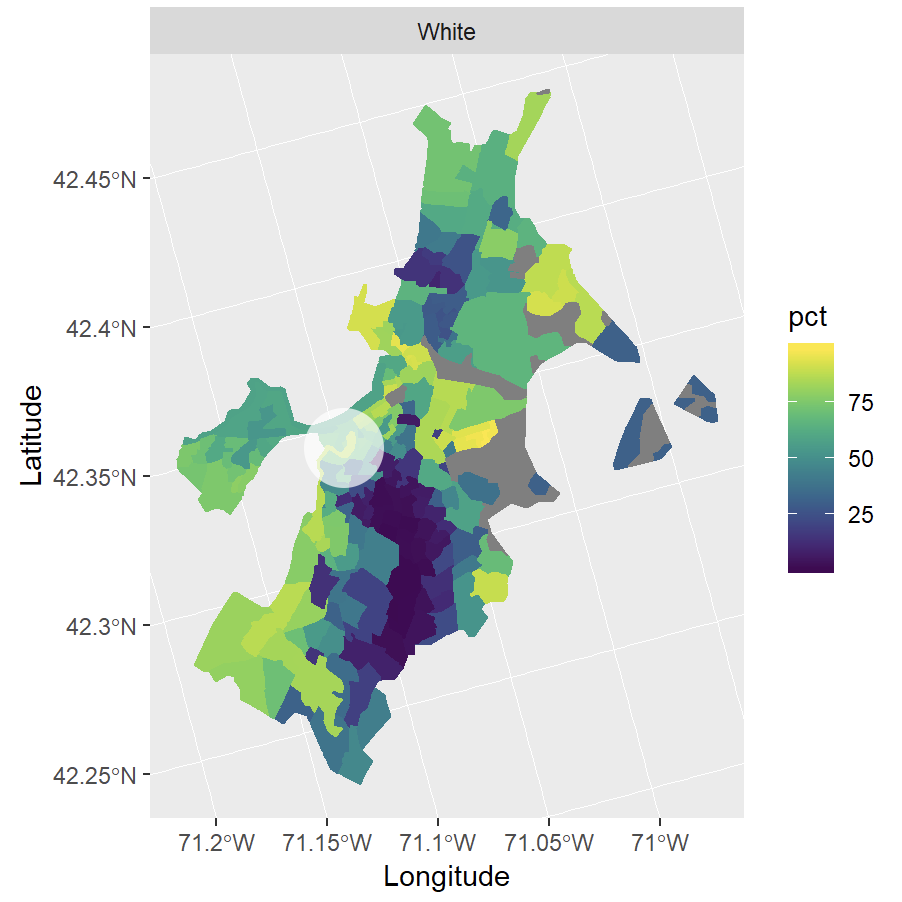
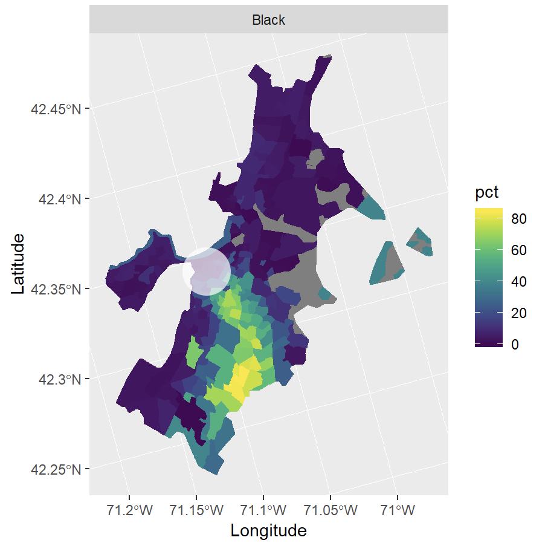
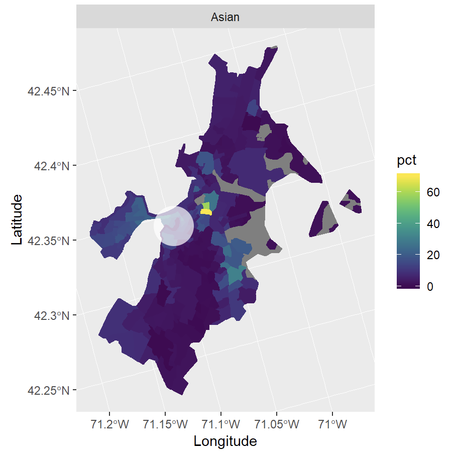
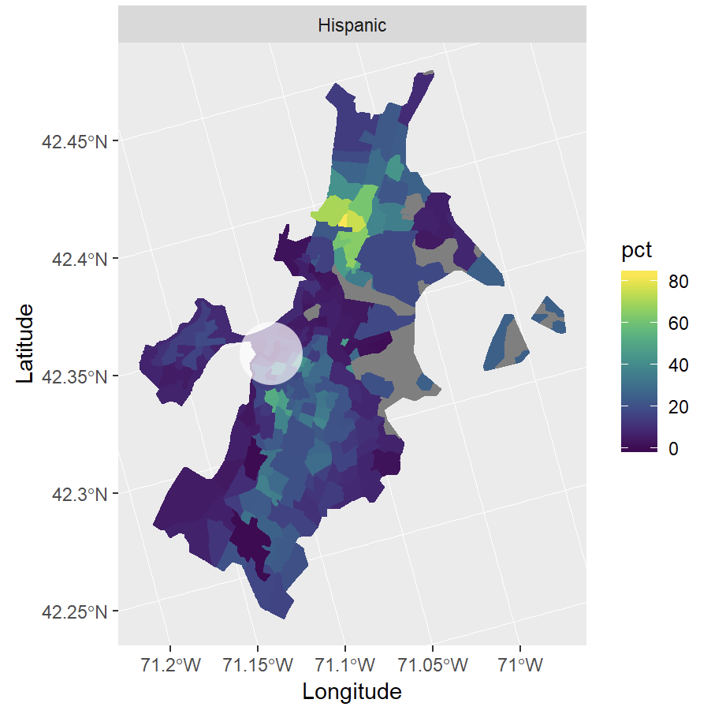

We aim to investigate how the populations of universities gentrify their cities. The Scope and The Huntington News have recently written on the negative effects of Northeastern University's expansion on its local neighborhoods. Gentrification is a complex, multifaceted issue. To reduce the scope of our project to something that can be studied more concretely in the time that we have, we have decided to focus on the impact that Northeastern University's population has on the household income and diversity of the neighborhood.
The two main indicators of change that we looked at in the neighborhoods surrounding Northeastern University are median income and racial diversity in comparison to the university. We will be looking at data from 2010 given that our analysis relies heavily on the census.
Median Income per Census Tract
The white circle in all figures following indicates Northeastern University:
The highest income bracket marked by the prominent lightest color on the map is coincidentally located within the area that is the common business district/downtown. The neighborhood around it has a stark color difference that falls into the lowest income bracket with the darker colors. This goes to show that only the area where Northeastern resides is populated by a high income population while its surrounding neighborhoods have lower income. The dark areas on the map indicate neighborhoods living within the poverty bracket.
Other prominent universities, such as Boston University and Harvard Medical School, are not located within the highest income brackets. Instead, they are located in the lowest ones. This suggests that there might not be a great correlation between the area and the median income. It could just be that Northeastern is coincidentally in the common business district that makes the highest income. In addition, university students do not make (much) income, so this map could only show the working class which has higher income and could afford to reside in the city center.
Percentage of Population per Census Tract
   Race plays a big role in gentrification, as most low-income housing is populated by colored people. The graphs that show population by race indicate that the high income population consists largely of whites, which is in the common business district. According to the Integrated Postsecondary Education Data System (IPEDS), in 2010, Northeastern's student population was 44% white. This could explain how the demographics in the graph are overwhelmingly white in the area where Northeastern is located as students tended to stay in surrounding neighborhoods near the university.
The Black and Hispanic population in Boston are concentrated in neighborhoods where the middle to lowest income medians are located. This is interesting data because the map could show how the surrounding areas where most colleges like Northeastern, Berklee, Wentworth, Massachusetts College of Art and Design, and New England School of Law — which are all located in around the downtown and business district — are more populated with whites, but just moving south, there is a large Black population. Even though The University of Massachusetts Boston is near Dorchester, a prominent Black neighborhood, the school's Black population is relatively small. That's consistent with the population of its vicinity.
Policies
From what we understand, the city of Boston has plans in addressing the housing needs in Boston. Boston is growing in population and is in need of more housing. Boston attracts students from all around the world as it houses many world renowned universities. The Walsh Administration has implemented a housing plan, "Housing a Changing City: Boston 2030," which outlines three significant goals in eliminating the housing problem. These include creating 18,500 new student dormitory beds by the end of 2030, and to reduce the number of undergraduates living off-campus in Boston by 50%. As of the report, 46% of the student population resides on-campus and 54% lives off-campus. The report also mentions that there are more than 20,500 undergraduate students renting from the private housing market from the year 2017 to 2018.
We believe that the city of Boston understands and acknowledges the problem which could potentially lead to gentrification. The city is implementing policies in order to protect the local citizens, which we think is a great first step in addressing the problem.
Further Questions
From the analysis we have made, we can ask more questions on how immediate the correlation between the factors such as income, diversity, and university population are. There may be other factors that we may want to consider such as housing prices and how much students rent housing in a certain area. Due to the limited time we had, we could not possibly consider every single factor.
As seen in the analysis above, students do not have significant income. But how does their financial standing in terms of family income affect the neighborhood? We believe that would be an interesting comparison. Even so, we cannot deny the fact that many universities are positioned around the city center, which in turn is the area populated by high income citizens. If we were to consider universities with bigger campuses like Harvard University or MIT (both of which were not considered here because they're not in Boston), how would these campuses affect their neighborhoods? Some of the universities that we have seen do not have a large campus and are instead scattered around the city. This makes the data harder to interpret as we may have to analyze more than just the immediate neighborhood of one building or cluster of buildings.
The project itself does not provide answers, nor does it address the problem of gentrification, but it is a starting point for a larger context where we ask how universities impact the surrounding neighborhood.
Why It's Important
As universities increasingly accept and enroll more students each year, we need to be conscious of whether we do, in fact, want to be supportive of them. If not, do we want to regulate student populations, housing situations, or both? The findings of this project could be useful to city governments and to the neighboring population. City governments would be able to see the demographics of neighborhoods as a function of university population and could determine whether they ought to prioritize higher university populations. They might also want to know if there's any motivation to regulate neighborhoods and/or universities. The citizens of a city would also want to be able to make informed decisions when voting for the presence and support of universities.
Blue Sky
Ideally, we would like to examine every university in the United States and to conduct interviews with those who have lived in those neighborhoods to capture the true human experience and sentiment surrounding university populations. We would like to find out if universities bring more good than harm to the surrounding neighborhood, or if they exploit the neighborhoods for the sake of those who could afford a tertiary education. And how does the sentiment change throughout the United States? Because Boston consists of so many various universities, Bostonians may feel differently about university population than those in other cities or states. Many of these questions are left as an extension to this project. ■